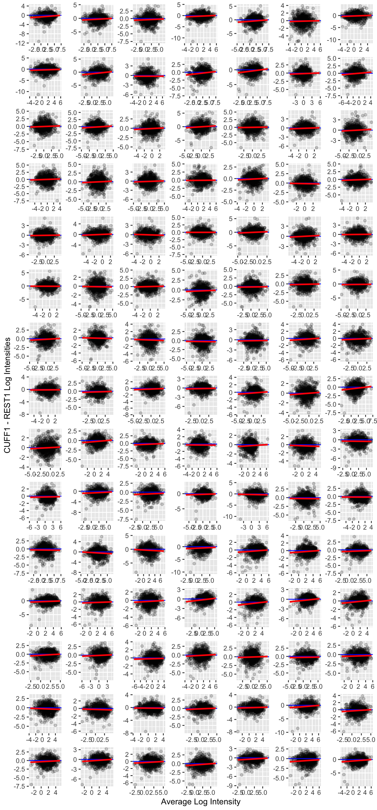

library(readr)
library(dplyr)
library(ggplot2)
library(duckplyr)
library(fs)
library(tidyr)
library(ggdist)9 ICA Connectivity
The Chapter 8 products provide outputs in a raw format that will be familiar to users of that library. To facilitate analyses, A2CPS has repackaged those products into a tabular format. This kit covers the repackaged structure.
9.1 Starting Project
9.1.1 Locate Data
On TACC, the neuroimaging data are stored underneath the releases. For example, data release v2.#.# is underneath
pre-surgery/mrisThe MRIQC metrics are underneath derivatives/postgift. Let’s take a look.
$ ls postgift
amplitude amplitude.json biomarkers biomarkers.json connectivity connectivity.json9.1.2 Extract Data
The tabular data comprise parquet files that have been partitioned in a hive style. Each table is a different summary of the components derived from GIFT.
- amplitude: a measure of component amplitudes. In particular, they are the fractional Amplitude of Low Frequency Fluctuations (Zou et al., 2008).
- connectivity: the (product-moment) correlations between component timecourses.
- biomarkers: putative biomarkers of chronic pain calculated for A2CPS analyses.
Zou, Q.-H., Zhu, C.-Z., Yang, Y., Zuo, X.-N., Long, X.-Y., Cao, Q.-J., Wang, Y.-F., & Zang, Y.-F. (2008). An improved approach to detection of amplitude of low-frequency fluctuation (ALFF) for resting-state fMRI: Fractional ALFF. Journal of Neuroscience Methods, 172(1), 137–141. https://doi.org/10.1016/j.jneumeth.2008.04.012
Let’s take a look at just the amplitudes.
amplitude <- read_parquet_duckdb(
dir_ls(
"data/postgift/amplitude",
recurse = TRUE,
glob = "*parquet"
),
prudence = "lavish"
)
head(amplitude)| fALFF | component | sub | ses | task | run | model |
|---|---|---|---|---|---|---|
| 2.061823 | 0 | 10003 | V1 | rest | 1 | 2.0 |
| 18.220871 | 1 | 10003 | V1 | rest | 1 | 2.0 |
| 2.286946 | 2 | 10003 | V1 | rest | 1 | 2.0 |
| 9.823509 | 3 | 10003 | V1 | rest | 1 | 2.0 |
| 1.624792 | 4 | 10003 | V1 | rest | 1 | 2.0 |
| 1.383541 | 5 | 10003 | V1 | rest | 1 | 2.0 |
To get a feel for the data, let’s see whether there are differences between the amplitudes in the REST1 and CUFF1 scans.
First, we filter the table, keeping only the amplitudes from a single model. We’ll also convert the components into a factor, for later use during modeling. At this point, the dataset is small enough that it’s easy to handle in memory, and so we’ll also collect it.
run1_amplitudes <- amplitude |>
filter(model == "2.1", run == 1) |>
select(-model, -run, -ses) |>
collect() |>
mutate(component = factor(component))
head(run1_amplitudes)| fALFF | component | sub | task |
|---|---|---|---|
| 1.215915 | 0 | 10003 | cuff |
| 5.390841 | 1 | 10003 | cuff |
| 2.573948 | 2 | 10003 | cuff |
| 2.491914 | 3 | 10003 | cuff |
| 1.392216 | 4 | 10003 | cuff |
| 1.952687 | 5 | 10003 | cuff |
To get a very high-level overview of the data, generate the MA plot. Let’s exclude the “red” scans to determine whether those are driving the difference.
red_run1_scans <- read_tsv(dir_ls("data/scans", glob = "*tsv"), na = "n/a") |>
filter(rating == "red", stringr::str_detect(filename, "cuff_run-0[12]")) |>
mutate(
sub = stringr::str_extract(filename, "[[:digit:]]{5}") |> as.integer()
) |>
select(sub)do_ma_plot <- function(.d) {
.d |>
pivot_wider(names_from = task, values_from = fALFF) |>
na.omit() |> # not every participant has a REST1 and CUFF1
mutate(a = (log2(rest) + log2(cuff)) / 2, m = log2(cuff) - log2(rest)) |>
ggplot(aes(x = a, y = m)) +
facet_wrap(~component, scales = "free", nrow = 15) +
geom_point(alpha = 0.2) +
geom_hline(yintercept = 0, color = "blue") +
geom_smooth(method = "lm", color = "red") +
xlab("Average Log Intensity") +
ylab("CUFF1 - REST1 Log Intensities") +
theme(strip.background = element_blank(), strip.text = element_blank())
}
run1_amplitudes_without_red <- run1_amplitudes |>
anti_join(red_run1_scans, by = join_by(sub))
run1_amplitudes |> do_ma_plot()
For the most part, there is not a substantially large difference in the log intensities. However, it may be interesting that there appears to be a trend such that amplitudes are somewhat lower in the CUFF as compared to REST conditions.
lme4::lmer(
log(fALFF) ~ task + (1 | sub) + (1 | component),
run1_amplitudes_without_red
) |>
summary()Linear mixed model fit by REML ['lmerMod']
Formula: log(fALFF) ~ task + (1 | sub) + (1 | component)
Data: run1_amplitudes_without_red
REML criterion at convergence: 426430.9
Scaled residuals:
Min 1Q Median 3Q Max
-5.4681 -0.6343 0.0154 0.6551 5.6997
Random effects:
Groups Name Variance Std.Dev.
sub (Intercept) 0.4852 0.6966
component (Intercept) 0.5847 0.7647
Residual 0.6963 0.8344
Number of obs: 170100, groups: sub, 943; component, 105
Fixed effects:
Estimate Std. Error t value
(Intercept) 0.560178 0.078077 7.175
taskrest 0.114274 0.004422 25.843
Correlation of Fixed Effects:
(Intr)
taskrest -0.036So, indeed, there is some evidence for higher amplitudes during REST1 as compared with CUFF1. Please note that a more careful analysis should include other factors like scanning site, participant age, or motion.
9.2 Considerations While Working on the Project
9.2.1 Variability Across Scanners
Many MRI biomarkers exhibit variability across the scanners, which may confound some analyses. For an up-to-date assessment of the issue and overview of current thinking, please see Confluence.
9.2.2 Data Quality
As with any MRI derivative, all pipeline derivatives have been included. This means that products were included regardless of their quality, and so some products may have been generated from images that are known to have poor quality—rated “red”, or incomparable. For details on the ratings and how to exclude them, see Appendix A. Additionally, extensive QC has not yet been performed on the derivatives themselves, and so there may be cases where pipelines produced atypical outputs. For an overview of planned checks, see Confluence.
9.2.3 Data Generation
These outputs were generated by the postgift_app.
All GIFT outputs rely on the MATLAB toolbox GIFT. The fALFF measures are calculated by icatb_postprocess_timecourses.m. Prior to calculating connectivities, timecourses were despiked and filtered (high-pass Butterworth filter thresholded at 0.15 Hz). Amptlitudes were calculated with frequency limits of 0.1 to 0.15 Hz. Spectra were estimated using a multi-taper (time-bandwidth: 3, K: 5 tapers).
The biomarkers table was calculated by this A2CPS biomarker-extractor workflow. Details of the calculations are provided in the data dictionary.
9.2.4 Citations
If you use these products in your analyses, please cite the relevant papers written by members TReNDS.